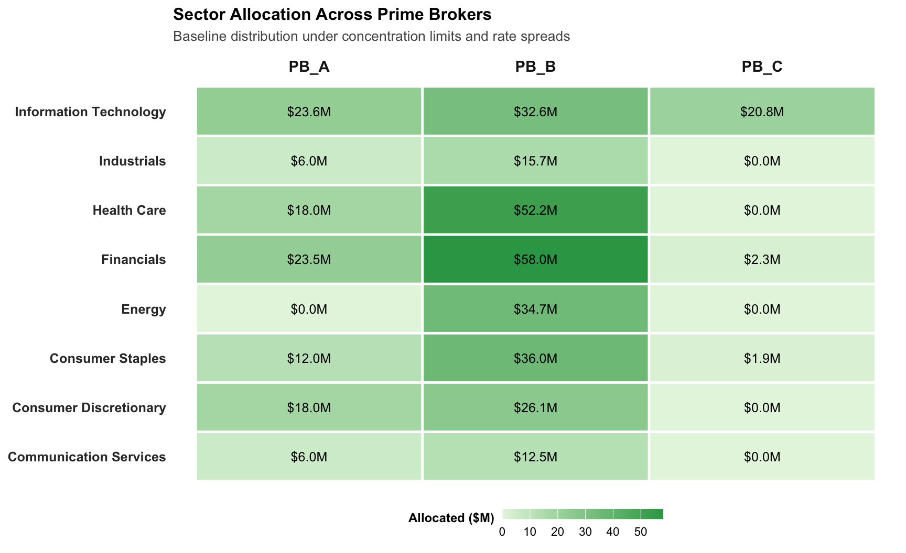
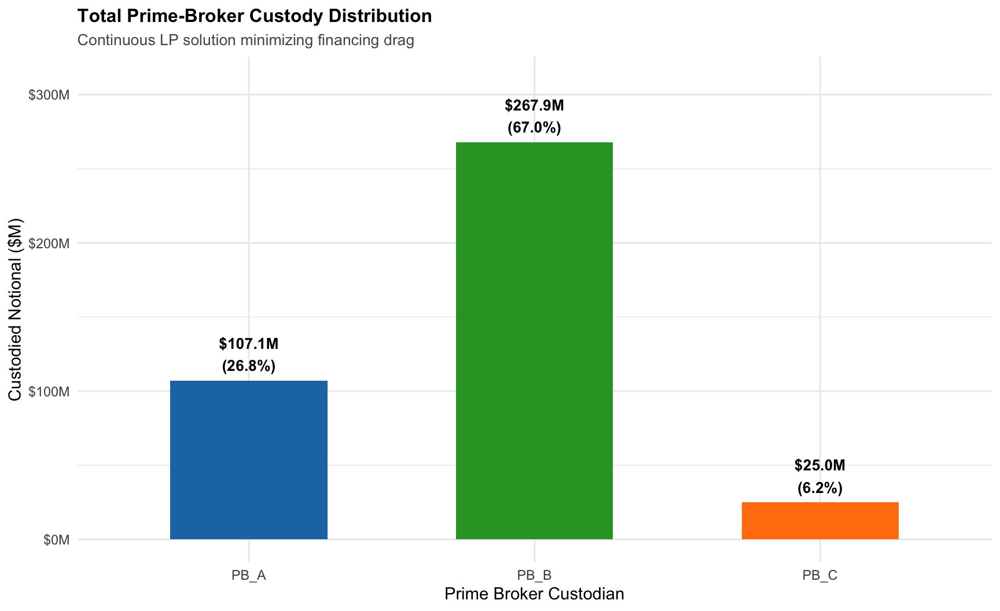
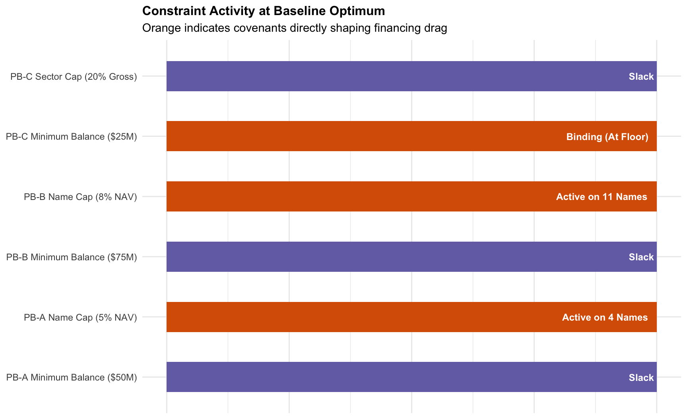

Baseline Optimization Results
Optimal Allocation Distribution The baseline solver achieves convergence with an annual financing drag of $21,134,409 (528.36 bps) across the $400M gross book.
Sector Heatmap & Active Constraints


Optimal Allocation Distribution
Under tranquil, baseline market conditions, the linear programming solver identifies a global cost minimum across the $400M gross book. The baseline allocation yields an annualized financing drag of $21,134,409 (528.36 bps).
Rather than distributing positions evenly, the solver routes capital according to marginal spread economics and regulatory netting efficiencies:
PB-B (Portfolio Margin): Receives the primary share—67.0% ($267.9M)—to exploit low debit financing spreads (SOFR + 30 bps) and risk-based offsets on hedged sector pairs.
PB-A (Bulge Bracket): Receives 26.8% ($107.1M), absorbing all hard-to-borrow (HTB) short lines and position overflow that would otherwise breach PB-B’s single-name concentration caps.
PB-C (Boutique): Allocated exactly $25,000,000 (6.25%), meeting its contractual minimum-balance floor without exposing the fund to its higher baseline spreads.
| Baseline Custody Distribution & Financing Expense | ||||
| Aggregated allocation across counterparties at LP optimality | ||||
| Prime Broker | Allocated Capital (USD) | Book Share (%) | Annual Financing Cost | Effective Spread (bps) |
|---|---|---|---|---|
| PB_A | $107,124,000 | 26.8% | $5,660,006 | 528.4 |
| PB_B | $267,876,000 | 67.0% | $14,153,502 | 528.4 |
| PB_C | $25,000,000 | 6.2% | $1,320,901 | 528.4 |

Sector Distribution & Cross-Margining
The distribution of sector sleeves across custodians highlights the mechanics of Portfolio Margin regimes. PB-B attracts matched long/short exposures within high-beta sectors (such as Technology and Financials), where correlated offsets significantly reduce regulatory margin capital. Directional or borrow-constrained sleeves migrate toward PB-A

Active Covenants & Constraint Utilization
The baseline allocation is tightly governed by counterparty risk parameters. The diagnostic chart below outlines the utilization rate of all contractual floors and ceilings:

Interpreting Covenant Activity & Constraint Utilization Plot
Why This Diagnostic Is Useful
In treasury operations, an optimization model is useful not just for the final allocations it recommends, but for showing where the fund is hitting contractual walls.
When a hedge fund runs an unconstrained linear program, it treats prime-broker facilities as infinite, frictionless buckets. In reality, facility agreements (ISDA/PB agreements) enforce strict risk limits. This diagnostic chart answers a critical operational question for the Chief Operating Officer and Treasurer:
“Which prime broker rules are actively restricting our portfolio and forcing us into more expensive financing, and which rules provide ample breathing room?”
How to Read the Chart
Every contractual boundary operates in one of two mathematical states at optimality:
⦁ Binding / Active (Orange): The allocation has reached 100% capacity of that constraint. These constraints carry positive shadow prices (\(\lambda > 0\)) and represent the exact bottlenecks driving total financing drag higher. Relaxing any orange constraint immediately lowers the fund’s financing costs.
⦁ Slack / Inactive (Purple): The allocation operates comfortably within the boundary. The fund holds excess headroom, the constraint has a shadow price of exactly $0.00, and it imposes zero current drag on the portfolio.
Strategic Insights Gleaned from the Results
⦁ PB-C Minimum Balance Is a Pure Cost Center: PB-C binds at exactly its $25.0M floor. Because PB-C charges higher spreads (SOFR + 55 bps vs. SOFR + 30 bps at PB-B), the solver allocates only what is required to maintain the credit facility. Renegotiating this commitment downward is the highest-priority operational saving.
⦁ PB-B Concentration Diverts Paired Trades: PB-B’s 8% NAV cap binds across 11 top holdings, forcing position overflow into the more expensive Bulge Bracket (PB-A). Negotiating single-name carve-outs on high-conviction longs would directly reduce debit financing expense.
⦁ PB-A Absorbs Residual Spillover: PB-A’s 5% NAV single-name cap binds on 4 large lines that exceeded PB-B capacity and required access to Tier-1 HTB locates.
⦁ Substantial Breathing Room on Core Facilities: Both PB-A ($50M floor) and PB-B ($75M floor) remain slack, confirming zero risk of tripping primary covenants and providing liquidity to shift collateral as spreads fluctuate.
Institutional Governance Insights
- The PB-C Covenant Anchor as an Inefficient Subsidy: PB-C requires a mandatory $25.0M gross balance floor. Because PB-C charges the syndicate’s highest long debit spread (SOFR + 55 bps vs. SOFR + 30 bps at PB-B), the optimizer allocates exactly $25.0M and not a penny more. This facility functions as an operational tax to maintain an auxiliary credit line. Treasury should benchmark PB-C’s execution quality and syndicate access against this spread drag, targeting a renegotiated $10M–$15M floor at annual renewal.
- PB-B Concentration Caps Force Spread Leakage: PB-B’s single-name cap binds at 8% of NAV ($9.6M) across 11 core holdings. Because the portfolio manager sizes several high-conviction positions above this limit, overflow must route to PB-A. This structural spillover incurs a 15 bps spread penalty (SOFR + 45 bps vs. SOFR + 30 bps). Risk and treasury should request bespoke 10% NAV issuer limits on liquid mega-caps during quarterly credit reviews.
- PB-A’s Role as a Borrow and Liquidity Valve: PB-A’s 5% NAV cap binds on 4 large lines after PB-B capacity is exhausted. More importantly, PB-A absorbs 100% of the book’s hard-to-borrow (HTB) shorts due to PB-B’s lack of internal borrow inventory. While PB-A carries higher headline spreads, it provides the essential stock-loan balance sheet required to keep short alpha operational.
- Substantial Facility Headroom on Core Lines: Both PB-A ($50M floor) and PB-B ($75M floor) exhibit ample slack, holding $107.1M and $267.9M in custody, respectively. The fund carries zero risk of tripping primary covenants and maintains dry powder to shift up to $50M–$100M between desks if market spreads or margin haircuts diverge.
- Leveraging Shadow Prices in Broker Negotiations: In continuous linear programming, every binding constraint produces an exact dual value (\(\lambda\)). This mathematical shadow price tells the CFO precisely how many thousands of dollars per year a 1% shift in concentration caps or covenant floors would save, transforming commercial fee reviews from anecdotal debates into data-driven negotiations.